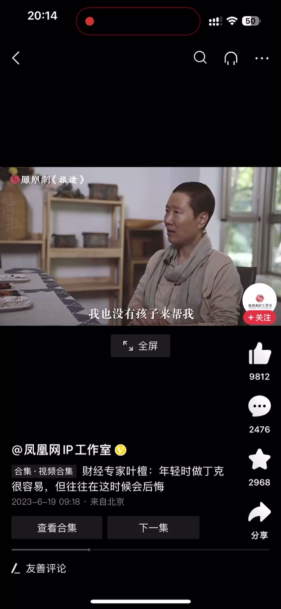
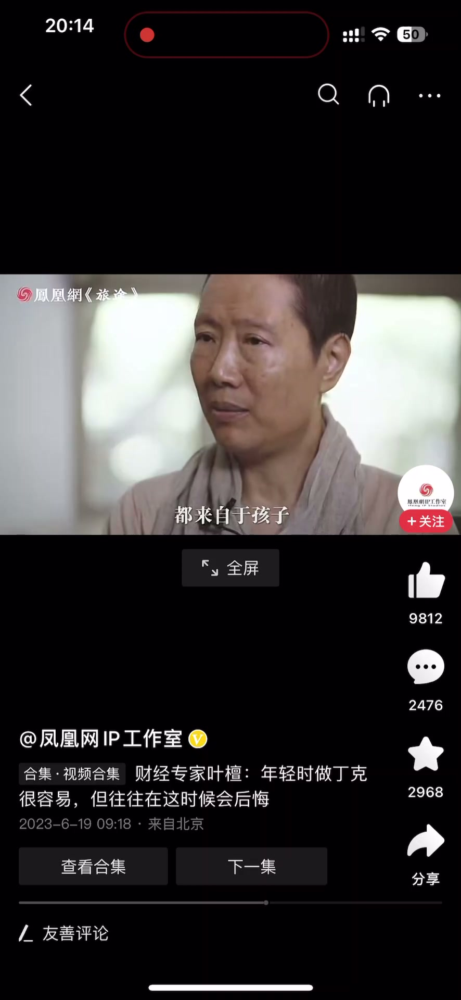

内容要点
一段 1 分多的晚年视角分享：丁克是年轻时很容易做出的选择，今年不要、明年不要，自然而然就丁克了；但到了五十岁，上有老、自己身体下滑、拼事业时头疼脑热没人帮，人往往会后悔「早知道做一道防火墙，有一两个孩子更可靠」。讲者用身边阿姨「孩子是最大精神寄托」的真实场景，点出现实：没有孩子未必是坏事，但大多数人找心理安慰还是孩子——要么有足够强大的心理和物质能力，否则压力会不堪重负。
知识结构
丁克年轻的时候容易，今年不要明年不要自然就丁克了；到50岁，上有老、身体下滑、头疼脑热没人帮、事业又不成功时，人会后悔早知道做一道防火墙，有一两个孩子更可靠保险。
讲者身边的阿姨们最大的精神寄托都来自孩子：说到孩子时眉飞色舞，「今天是我儿子帮我挂的号」「我儿子说多少钱妈我都给你治了」，这是他们最大的精神支撑。
可以寻求信仰等替代支撑，没有孩子未必是坏事，佛教也这么说；但大多数人找心理安慰还是孩子，这就是现实。要么有足够强大的心理支撑能力和物质能力，否则各方面的压力会使得你不堪重负。
丁克的代价要在年轻时看清：50岁以后事业需要人帮、生病需要人陪，孩子常常是「防火墙」和最大精神寄托——没有孩子未必是坏事，但你要有替代它的强大心理与物质能力。
00:00-00:30年轻的丁克与50岁的后悔
丁克是一种很不容易做出的选择，但年轻的时候是容易的：我今年不要孩子、明年不要孩子，自然而然就丁克了，对不对？我可以去拼事业，年轻的时候觉得这些都不是事情。
到了你 50 岁的时候，你自然而然就会想：这个时候上有老、下没有小，身体也不是那么好了；因为拼事业，一旦我有头疼脑热、风吹草动，我边上没有人来帮我，我也没有孩子来帮我，那我的事业又不是太成功，那怎么办呢？
往往人在这种时候会后悔：早知道这样，我就做一道防火墙，还是有一两个孩子会比较可靠、比较保险一点。


00:31-01:24孩子的精神支撑与现实
我见过的几乎所有的人，不管是病友还是我家里的人，因为这一年我跟阿姨接触比较多，我身边的阿姨他们最大的精神寄托都来自于孩子。
他们在说到自己孩子的时候眉飞色舞；他们在说「今天是我儿子帮我挂的号」「我儿子说多少钱妈我都给你治了」——当他们在说这些东西的时候，是他们最大的精神支撑。
那我们可以寻求其他支撑，比如信仰上的支撑；没有孩子未必是件坏事情，佛教也这么说。但大多数人找心理安慰还是孩子，这个就是现实。
所以你要么有足够强大的心理支撑能力跟物质能力，否则各方面的压力会使得你不堪重负。



完整转录（48段）
以下文本由 Whisper medium 模型自动转录，可能存在少量识别误差，已尽可能修正。
丁克是一种很不容易做出的选择
年轻的时候是容易的
我今年不要孩子 明年不要孩子
自然而然就丁克了 对不对
我可以去拼事业
年轻的时候觉得这些都不是事情
到了你50岁的时候
你自然而然就会想
因为这个时候上有老
下面的人家有小
你是没有小的
身体也不是那么好了
因为拼事业
一旦我有头疼脑热风吹草动
我边上没有人来帮我
我也没有孩子来帮我
那我的事业又不是太成功
那怎么办呢
往往人在这种时候会后悔
早知道这样
我就还是做一道
做一道防火墙
还是有一个两个孩子
会来得比较可靠
比较保险一点
我见过的几乎所有的人
不管是病友还是我家里的人
因为这一年我跟阿姨接触比较多
我身边的阿姨他们
他们最大的精神寄托
都来自于孩子
他们在说到自己孩子的时候
眉飞色我
然后他们在说
我今天是我儿子帮我挂的号的时候
我儿子说多少钱妈我都给你治了
当他们在说这些东西的时候
是他们最大的精神支撑
那我们可以寻求其他支撑
信仰上的支撑
没有孩子未必是件坏事情
佛教长也这么说
但大多数人找心理安慰还是孩子
这个就是现实
所以你要么有足够强大的
心理支撑能力跟物质能力
否则各方面的压力
会使得你不堪祝福